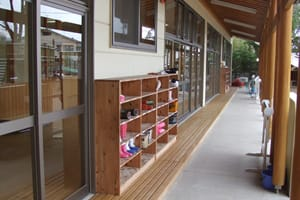
1テラス
子どもたちは、この下駄箱に靴を入れてお部屋に入ります。
愛真幼稚園の園舎と園庭には、子どもたちが安心して遊べる場所がたくさんあります。
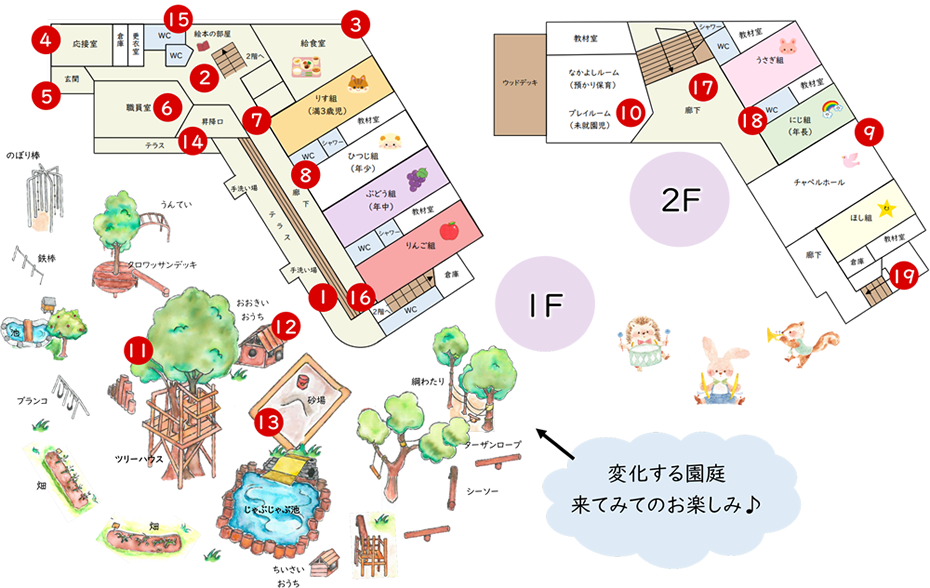
画面をドラッグして向きを変えたり、矢印を押して園内を移動したりできます。
マップの番号と写真を照らし合わせてご覧ください。

子どもたちは、この下駄箱に靴を入れてお部屋に入ります。
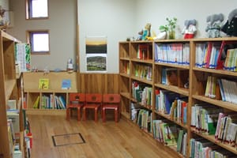
昔話や図鑑、物語絵本などたくさんの絵本がそろっています。
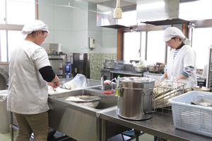
幼稚園の給食をつくる場所です。
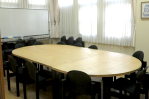
会合に使います。
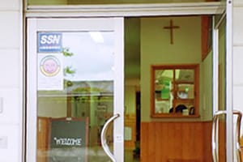
お客様専用の玄関です。
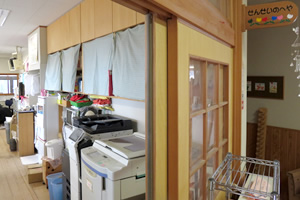
先生たちのお部屋です。
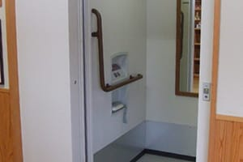
障がいのある子どもや高齢者が利用したり、給食の運搬にも利用します。
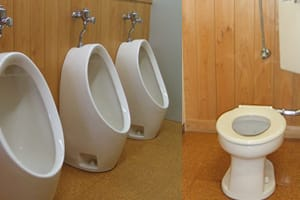
各部屋からすぐに利用でき、子どもたちも安心のトイレです。
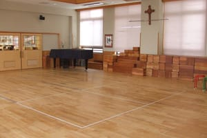
子どもたちの遊び場、又、式典に利用します。
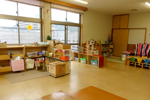
未就園児の子どもたちの遊び場として、月3～5回開放しています。
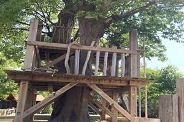
園庭の真ん中に大きなツリーハウス！大人気の遊び場です。
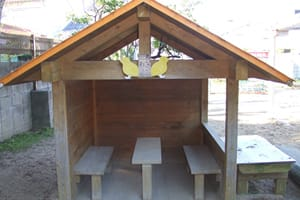
砂場の道具でごちそう作り！
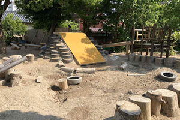
大きな大きな砂場。ダイナミックに遊んでいます。
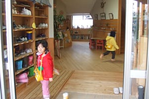
年長組の下駄箱です。元気におはよう！
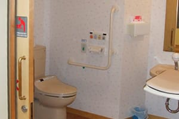
ベビーシートを設置しています。
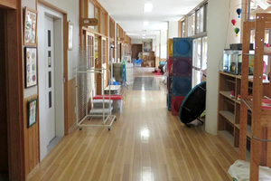
ひろ～い廊下。子どもたちの遊び場としても利用します。
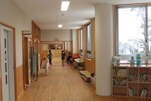
杉のかおりがして、とても気持ちがいいです。
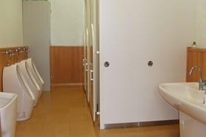
年長組が利用するトイレです。
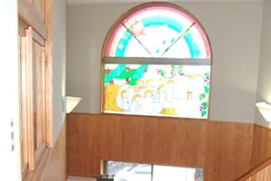
ステンドグラスがキラキラ★